import mcstasscript as ms
import make_SANS_instrument
import quizlib
quiz = quizlib.SANS_Quiz()
SANS exercise#
In this notebook you will get this simplified SANS instrument and answer a few questions about the results. You will also get to improve it and run experiments both with and without a sample.
SANS is an abbreviation for Small Angle Neutron Scattering, and as the name suggests is concerned with the scattered signal at very small angles. Here we will look at a sample in solution composed of some simple geometry, which will cause an interesting scattering pattern on the detector.
Get the instrument object#
First we need the McStas instrument object. Here it is retrieved from a local python function that generates it.
instrument = make_SANS_instrument.make(input_path="run_folder")
Investigate instrument#
First investigate the instrument object instrument using some of the available methods.
All the methods that help do that start with the word show.
In particular, look at what parameters are available and take a look at the instrument geometry.
instrument.show_parameters()
double integration_time = 1 // [s] Time span of experiment
double wavelength = 6.0 // [AA] Mean wavelength of neutrons
double d_wavelength = 3.0 // [AA] Wavelength spread of neutrons
double n_pulses = 1.0 // [1] Number of pulses from source
double sample_distance = 8.0 // [m] Source Sample distance
double enable_sample = 0 // [1] 0 for nothing, 1 for SANS sample
double detector_distance = 2.0 // [m] Sample_detector_distance
Set parameters#
Before running the instrument we need to set some parameters.
The most important one is the detector_distance parameter describing the distance between the sample and the detector.
Given the need for high angular precision in determining the scattering angle of the neutron, which of these would be best?
A: 1 m
B: 2 m
C: 3 m
Could instead have question on wavelength band to test time of flight knowledge.
quiz.question_1()
Show code cell output
Insert your answer in the question above.
Set the parameters of the instrument using the set_parameters method.
sample_distance: 150 m
wavelength: 6 Å
wavelength band: 1.5 Å
enable_sample: 0
n_pulses: 1
Show code cell content
instrument.set_parameters(
sample_distance=150,
wavelength=6,
d_wavelength=1.5,
enable_sample=0,
detector_distance=3,
)
# Test your instrument by giving it to the question_2
quiz.question_2(instrument)
Show code cell output
Correct!
The parameters of the instrument were correctly set!
Instrument settings#
Before running the simulation a few settings pertaining to the technical side should be set. These use a different method to clearly distinguish them from the instrument parameters. One important parameter is called output_path which sets the name of the generated folder.
instrument.settings(ncount=5e6, mpi=4, suppress_output=True, NeXus=True, output_path="first_run")
Run the instrument#
Now the simulation can be executed with the backengine method. Store the returned data in a python variable called data.
data = instrument.backengine()
data
[
McStasData: signal type: 1D I:44.9617 E:0.184276 N:3326090.0,
McStasDataEvent: signal_tof_event with 3326087 events. Variables: p x y n id t,
McStasData: signal_tof_all type: 2D I:44.9617 E:0.184276 N:3326090.0,
McStasData: signal_tof type: 2D I:44.9617 E:0.184276 N:3326090.0]
ms.make_plot(data, figsize=(7, 5), log=True, orders_of_mag=5)
Skipped plotting signal_tof_event as it contains event data.
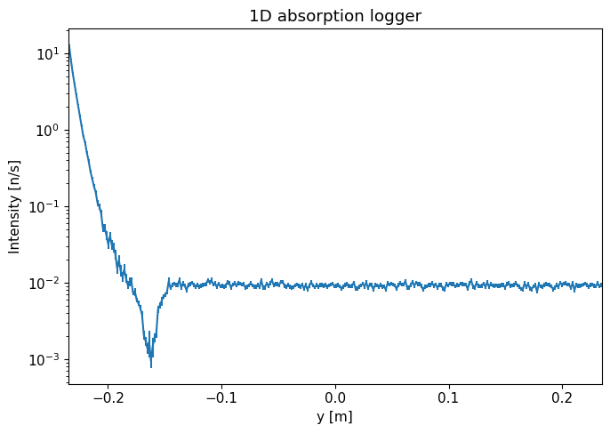
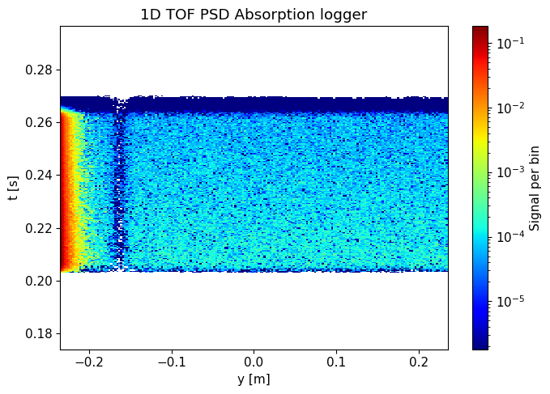
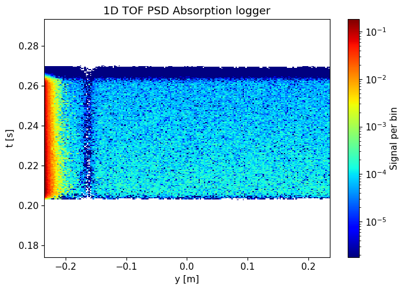
Interpretation of the data#
The detector is a He3 tube centered 25 cm above the beam height and with a metal casing.
What does the signal look like without sample?
A: Most of the signal close to the direct beam
B: Flat signal over detector height
C: Most of the signal is far away from the direct beam
quiz.question_3()
Show code cell output
Insert your answer in the question above.
Is this a problem for a SANS instrument?
A: Yes
B: No
quiz.question_4()
Show code cell output
Insert your answer in the question above.
How can it be improved?
A: By adding a Velocity selector
B: By adding a Chopper
C: By adding a Beamstop
D: By adding a Slit
quiz.question_5()
Show code cell output
Insert your answer in the question above.
Improve the instrument#
In order to improve the performance of the instrument, we will add a McStas component. The first aspect to consider when doing so is where to place it, both in the component sequence and its physical location. We start by looking at the code sequence.
McStas sequence#
Use either the show_diagram or show_components method on the instrument object to get an overview of the component sequence in the instrument.
Where would you place the new component?
A: After the source
B: Before the sample position
C: After the sample position
D: Before the detector position
instrument.show_diagram()
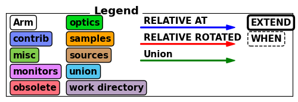
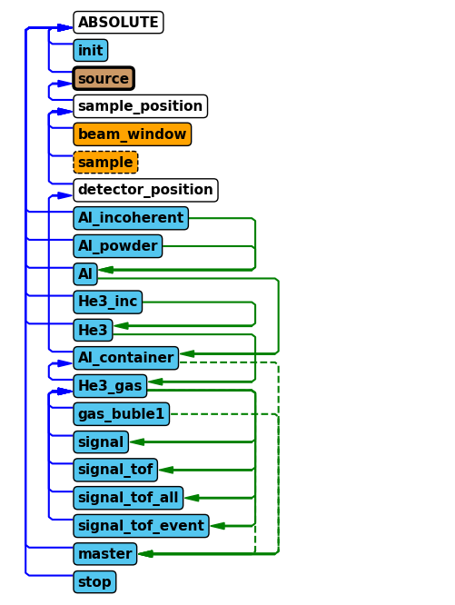
quiz.question_6()
Show code cell output
Insert your answer in the question above.
Which component#
Now we need to select what type of component to add to the instrument, here we will need the Beamstop component.
Use the component_help method on the instrument to learn more about this component.
Show code cell content
instrument.component_help("Beamstop")
___ Help Beamstop __________________________________________________________________
|optional parameter|required parameter|default value|user specified value|
xmin = -0.05 [m] // Lower x bound
xmax = 0.05 [m] // Upper x bound
ymin = -0.05 [m] // Lower y bound
ymax = 0.05 [m] // Upper y bound
xwidth = 0.0 [m] // Width of beamstop (x). Overrides xmin, xmax.
yheight = 0.0 [m] // Height of beamstop (y). Overrides ymin, ymax.
radius = 0.0 [m] // radius of the beam stop in the z=0 plane, centered at Origo
-------------------------------------------------------------------------------------
Add beamstop component and set parameters#
Use the add_component method on the instrument to add a chopper.
Place it in the component sequence by using either the before or after keyword arguments.
Set the parameters:
xwidth: 0.1 myheight: 0.02 m
Show code cell content
beamstop = instrument.add_component("beamstop", "Beamstop", before="detector_position")
beamstop.set_parameters(xwidth=0.1, yheight=0.02)
# Validate instrument again
quiz.question_7(instrument)
Show code cell output
Correct!
The beamstop was added at the right point in the component sequence!
Placing the component in space#
The next physical location of the component need to be specified, which is done using the set_AT component.
This method takes a list of 3 numbers, corresponding to the x, y and z coordinates of the component.
One can also specify in what coordinate system one wants to work, which can be that of any preceding component.
Use the RELATIVE keyword to work in the sample_position coordinate system. The instrument has a parameter called detector_distance, use this to place the beamstop 90% of the way from the sample to the detector.
Show code cell content
beamstop.set_AT([0, 0, "0.9*detector_distance"], RELATIVE="sample_position")
quiz.question_8(instrument)
Show code cell output
Correct!
The beamstop was added at the right point in the component sequence and space!
Verify new component#
Now that the chopper has been added to the instrument, lets show the component sequence again to verify it was added correctly.
instrument.show_diagram()
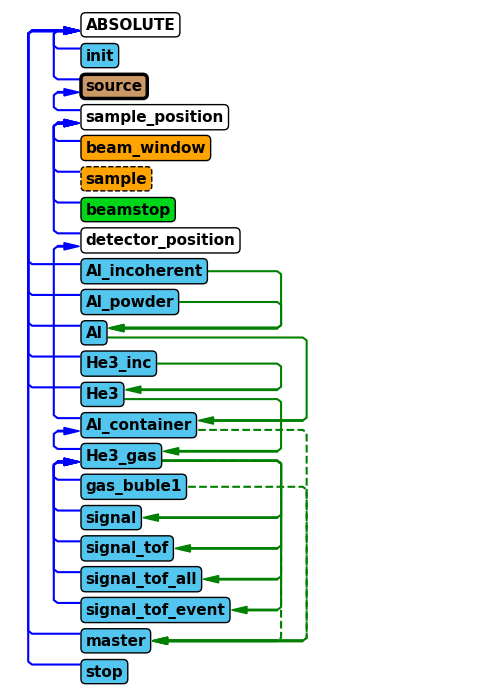
Run improved instrument#
Run the improved instrument with the following parameters:
sample_distance: 150 md_wavelength: 1.5 Åenable_sample: 0n_pulses: 1integration_time: 5E4 s
We set a long integration time as this corresponds to a calibration run done just once, and by running this for a longer time the statistical error will be smaller.
Store the returned data in a variable called background_data. Call the generated data folder “SANS_without_sample_1_pulse” using the output_path argument in the settings method of the instrument.
instrument.set_parameters(enable_sample=0, n_pulses=1, integration_time=5e4)
instrument.settings(output_path="SANS_without_sample_1_pulse")
background_data = instrument.backengine()
background_data
[
McStasData: signal type: 1D I:2.67328 E:0.00982725 N:2061270.0,
McStasDataEvent: signal_tof_event with 2061268 events. Variables: p x y n id t,
McStasData: signal_tof_all type: 2D I:2.67328 E:0.00982725 N:2061270.0,
McStasData: signal_tof type: 2D I:2.67328 E:0.00982725 N:2061270.0]
ms.make_plot(background_data, figsize=(7, 5), log=True, orders_of_mag=5)
Skipped plotting signal_tof_event as it contains event data.
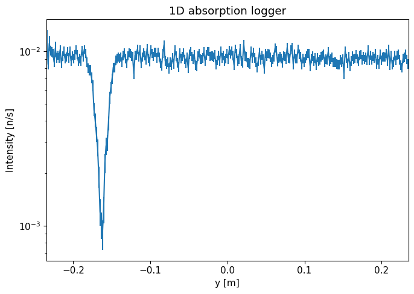
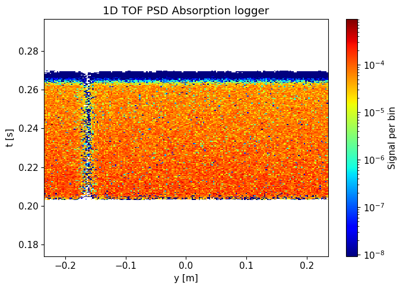
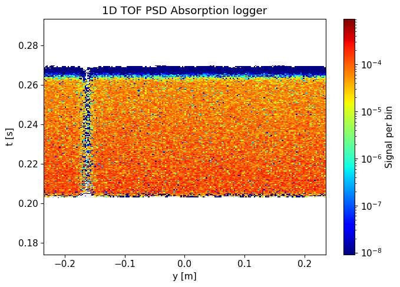
Do you see an improvement compared to earlier results?
A: Yes
B: No
quiz.question_9()
Show code cell output
Insert your answer in the question above.
Run with sample#
Now the sample can be added by setting the enable_sample parameter to one and calling the backengine method again. Here the integration time should be smaller, 500 s, as this run correspond to one of many measurements of different samples. Save the data in a variable called sample_data and use the settings method to provide a reasonable name to the run.
instrument.settings(output_path="SANS_with_sample_1_pulse")
instrument.set_parameters(enable_sample=1, integration_time=500)
sample_data = instrument.backengine()
ms.make_plot(sample_data, figsize=(7, 5), log=True, orders_of_mag=10)
Skipped plotting signal_tof_event as it contains event data.
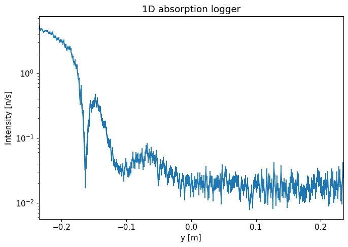
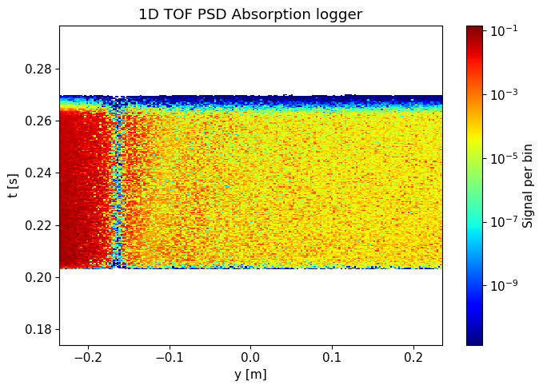
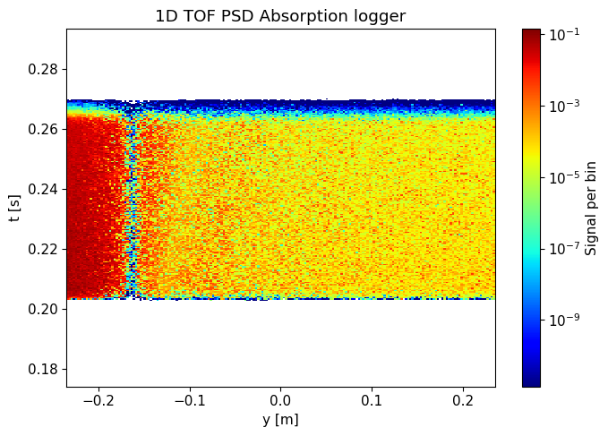
Compare the results with and without sample. Where on the detector is the difference largest?
A: Lowest part of the detector
B: Middle of the detector
C: Top of the detector
quiz.question_10()
Show code cell output
Insert your answer in the question above.
Increase the number of pulses#
Your final task is to re-run the simulations with and without sample, using 3 pulses instead of 1. Set integration time to 5E4 when running without sample and 500 when running with sample. We will use this data in the exercises for the rest of the week.
Hints:
Change the destination folder so that you don’t overwrite the results from the 1-pulse simulations.
Remember to adjust the
ncountaccordingly, we would like 3 times more rays now that we use 3 pulses.
Show code cell content
# Without sample
instrument.settings(ncount=1.5e7, output_path="SANS_without_sample_3_pulse")
instrument.set_parameters(enable_sample=0, n_pulses=3, integration_time=5e4)
background_3_pulses = instrument.backengine()
# With sample
instrument.settings(ncount=1.5e7, output_path="SANS_with_sample_3_pulse")
instrument.set_parameters(enable_sample=1, n_pulses=3, integration_time=500)
sample_3_pulses = instrument.backengine()